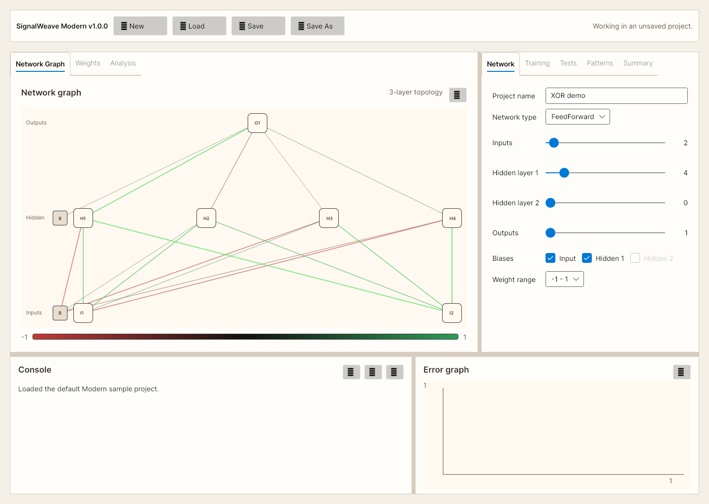
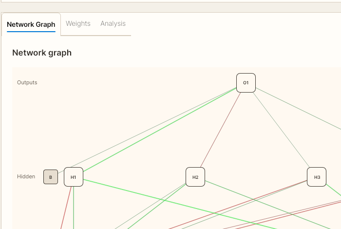

One file instead of five
Project settings, patterns, weights, training sessions, and rollback history live together in one Modern project file.
SignalWeave Modern
SignalWeave Modern is the main SignalWeave experience: a cross-platform .NET 8 desktop and WebAssembly app for feed-forward and simple recurrent network work. It keeps network settings, patterns, weights, rollback checkpoints, and analysis in one workflow.

Project settings, patterns, weights, training sessions, and rollback history live together in one Modern project file.
Move from training to tests, weights, hidden activations, clustering, time series, and surface plots without leaving the app.
Use the desktop build on Windows, Linux, or macOS, or open the same Modern workflow directly in the browser.
Use Cases
Modern is best when you want a visual, inspectable neural-network workflow rather than a bare library or notebook-only loop.
Show how topology, training steps, weights, and outputs change without forcing students into a code-first workflow.
Load a project, train in blocks, test patterns individually, roll back, and compare sessions without rebuilding your setup.
Inspect targets, outputs, deltas, hidden activations, and per-pattern pass/fail state to find exactly where a model is going wrong.
Inspect weight matrices, cluster outputs or hidden states, and understand how the model organizes your patterns internally.
Use time-series and hidden-state tools to inspect how recurrent behavior changes across ordered patterns and resets.
Share a live app URL for quick demos and evaluations without asking users to install the desktop build first.
How To Start
The fastest way to understand the app is to open the sample and walk one training and test cycle.
Launch the web app or download the desktop build for your OS.
Open seventeen-patterns-7x7-modern.swproj.json to load the saved network, patterns, and weights.
Go to Training and click Train #1. The error graph and session history update as the run completes.
Use Tests, Weights, and Analysis to inspect outputs, hidden activations, and learned structure.
Screenshots
The page focuses on Modern because that is the primary product line. Classic is still available, but it is a side workflow rather than the recommended starting point.

Downloads
Recommended
The project-file-first workflow for day-to-day use. Use this if you want the app that the landing page, sample guide, browser build, and current documentation are centered around.
FAQ
It is a visual neural-network trainer and analysis workbench for feed-forward and simple recurrent networks. It is intended for people who want a usable application, not just a code library.
Modern is organized around one project file and integrated tabs for training, tests, weights, patterns, and analysis. Classic preserves the BasicProp-style workflow and is useful mainly if you want that exact reference surface.
Modern stores the network definition, embedded patterns, current weights, training sessions, rollback checkpoints, and related workspace state together, so you do not need separate load/save actions for each item.
Yes. The Modern workflow is available directly in the browser as a WebAssembly app at /app/. Desktop builds are also available for Windows, Linux, and macOS.
Download the sample project, open it in Modern, run Train #1, then use Tests, Weights, and Analysis to inspect what changed.
Yes. The full project, release history, and source are available on GitHub.